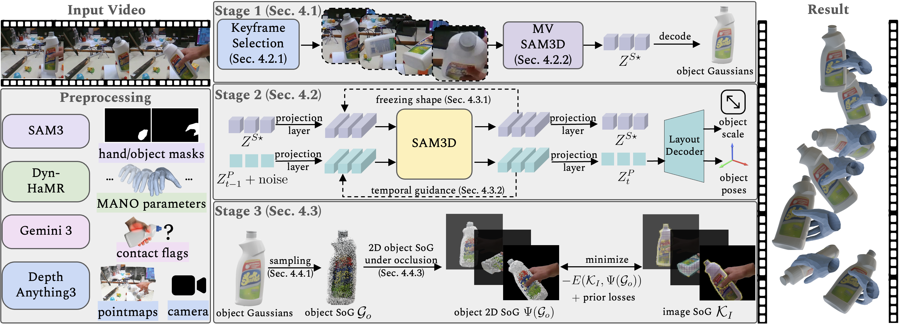
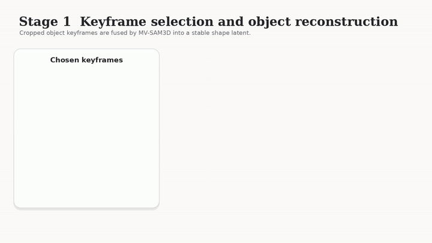
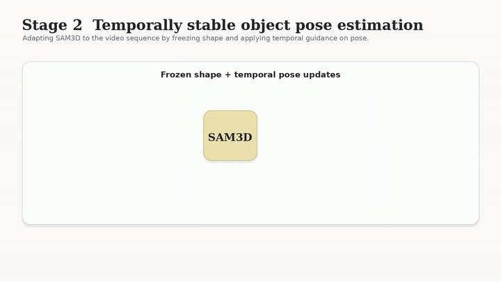
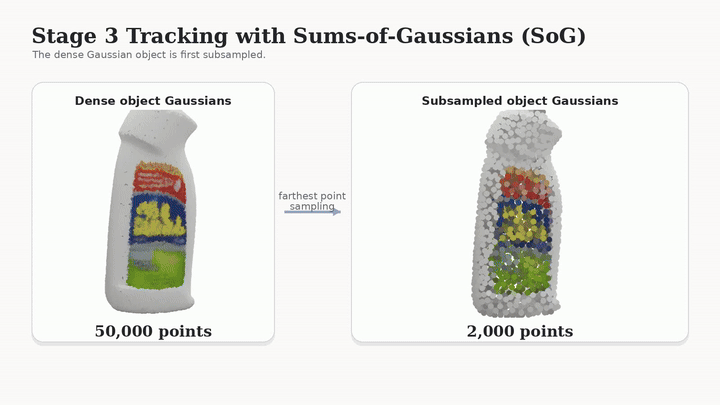

Grasp in Gaussians
Fast Monocular Reconstruction of Dynamic Hand–Object Interactions
Interactive 3D Visualizer
efficient
on long videos
in the wild
Grasp in Gaussians reconstructs hand-object geometry and motion from a single monocular video. Our method is highly efficient: We reduce the runtime of prior works from 3-10 hours to 30 minutes on long sequences.
Abstract.
We present Grasp in Gaussians (GraG), a fast and robust method for reconstructing dynamic 3D hand-object interactions from a single monocular video. Unlike recent approaches that optimize heavy neural representations, our method focuses on tracking the hand and the object efficiently, once initialized from pretrained large models. Our key insight is that accurate and temporally stable hand-object motion can be recovered using a compact Sum-of-Gaussians (SoG) representation, revived from classical tracking literature and integrated with generative Gaussian-based initializations. We initialize object pose and geometry using a video-adapted SAM3D pipeline, then convert the resulting dense Gaussian representation into a lightweight SoG via subsampling. This compact representation enables efficient and fast tracking while preserving geometric fidelity.
For the hand, we adopt a complementary strategy: starting from off-the-shelf monocular hand pose initialization, we refine hand motion using simple yet effective 2D joint and depth alignment losses, avoiding per-frame refinement of a detailed 3D hand appearance model while maintaining stable articulation.
Extensive experiments on public benchmarks demonstrate that GraG reconstructs temporally coherent hand-object interactions on long sequences 6.4x faster than prior work while improving object reconstruction by 13.4% and reducing hand per-joint position error by over 65%.
Qualitative Comparison.
Results
Results
Approach.

Method Overview.
Given a monocular video, we recover per-frame hand-object poses and geometry. We first preprocess the video to obtain masks, an initial hand trajectory, per-frame hand-object contact flags, pointmaps, and camera intrinsics/extrinsics. Stage 1 reconstructs a canonical object with MV-SAM3D by selecting keyframes and decoding shape tokens into a dense Gaussian asset. Stage 2 estimates per-frame object pose and scale by adapting SAM3D to videos with a frozen canonical shape and temporal guidance. Stage 3 refines hand and object motion using an explicit tracking objective by sparsifying dense Gaussians into a compact SoG and performing occlusion-aware alignment with lightweight priors.
Stage 1: Keyframe Selection and Object Reconstruction.

We select informative keyframes and use MV-SAM3D to reconstruct a canonical high-quality Gaussian object representation from monocular observations.
These views provide complementary visual cues for accurate shape reconstruction compared to single-frame reconstruction.
Stage 2: Temporally Stable Object Pose Estimation.

We adapt SAM3D to estimate object poses throughout the video. With the canonical shape fixed, we estimate per-frame object pose and scale over the full video with temporal guidance for stable long-range tracking.
Stage 3: Hand–Object Tracking with Sums-of-Gaussians.

We sparsify the dense Gaussian object into a compact Sums-of-Gaussians form and refine both hand and object motion with occlusion-aware tracking and lightweight priors.
Acknowledgements.
We thank Mohit Mendiratta, Wanyue Zhang, Olaf Dünkel, and Anton Zubekhin for the fruitful discussions.
The interactive viewer is built on top of AGILE website.